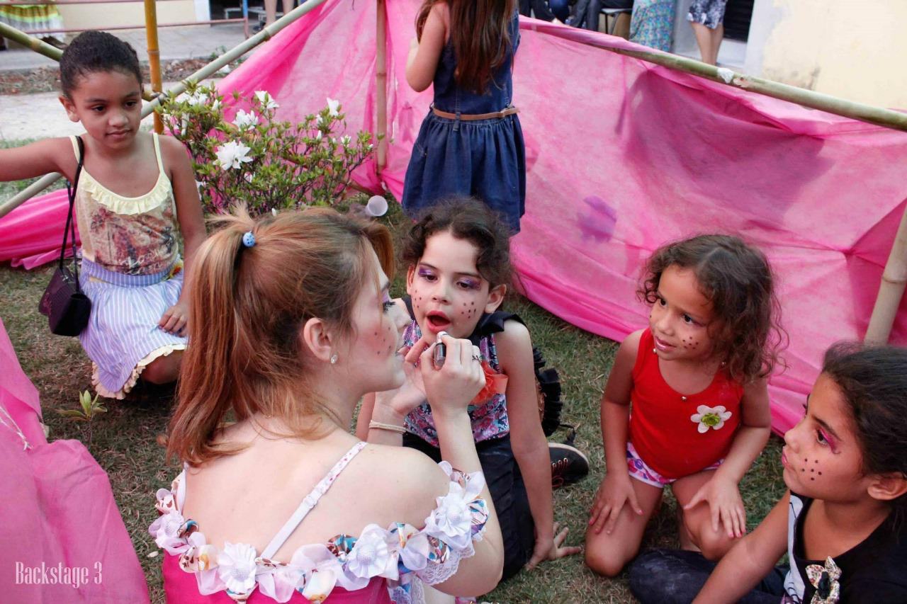

Ações Sociais
Um pouco sobre
O voluntariado em ações sociais, especialmente em comunidades, casas de repouso e residências, é uma forma de transformar vidas através da doação de tempo e afeto. Ao interagir com idosos e crianças, os voluntários proporcionam momentos de alegria, companhia e cuidado, contribuindo para o bem-estar e a qualidade de vida dessas pessoas.
Promovemos ações de voluntariado em casas de repouso, comunidades e famílias carentes. Levando apoio, ajuda social, carinho e atividades que incentivem o desenvolvimento social. Nosso objetivo é oferecer acolhimento, ajuda e incentivo a estes específicos grupos que socialmente acabam excluídos, solitários e deixados à só pela sociedade.
Algumas atividades
Realizar visitas regulares a instituições como asilos, orfanatos e comunidades carentes para promover atividades recreativas, culturais e sociais.
Acompanhar idosos e crianças em atividades do dia a dia, como visitas, brincadeiras e terapias.
Auxiliar em tarefas simples, como leitura, jogos, conversas, alimentação e higiene pessoal.
Planejar e organizar eventos como festas, comemorações de datas especiais e atividades recreativas.

Locais de atendimento
Lares e asilos de Idosos
Casas de famílias carentes.
Comunidades carentes.
Orfanatos.